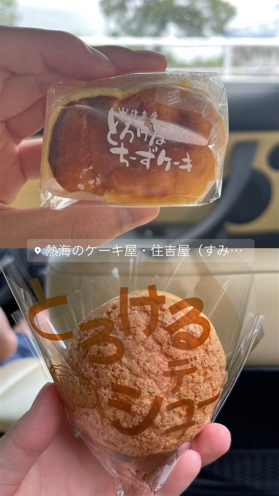
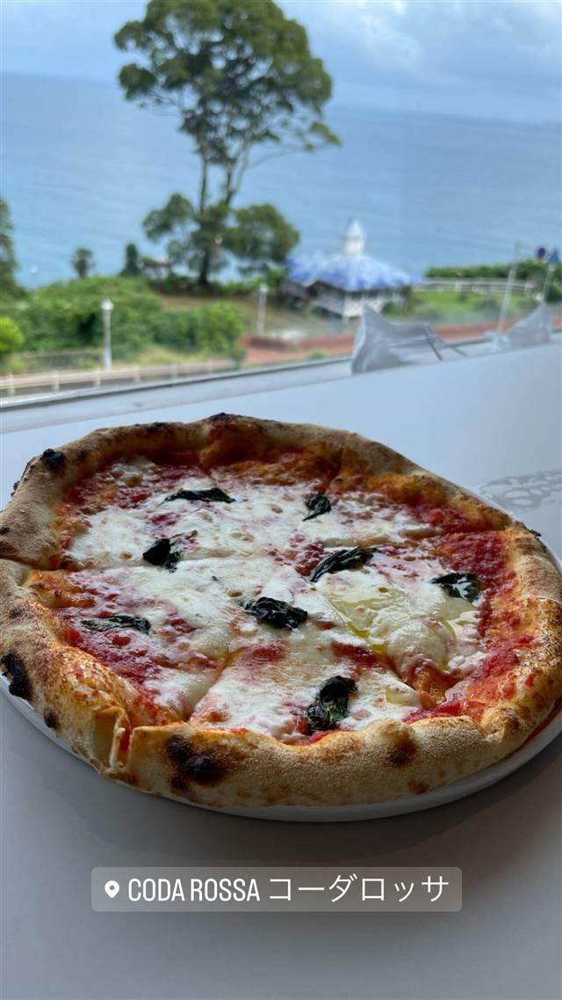
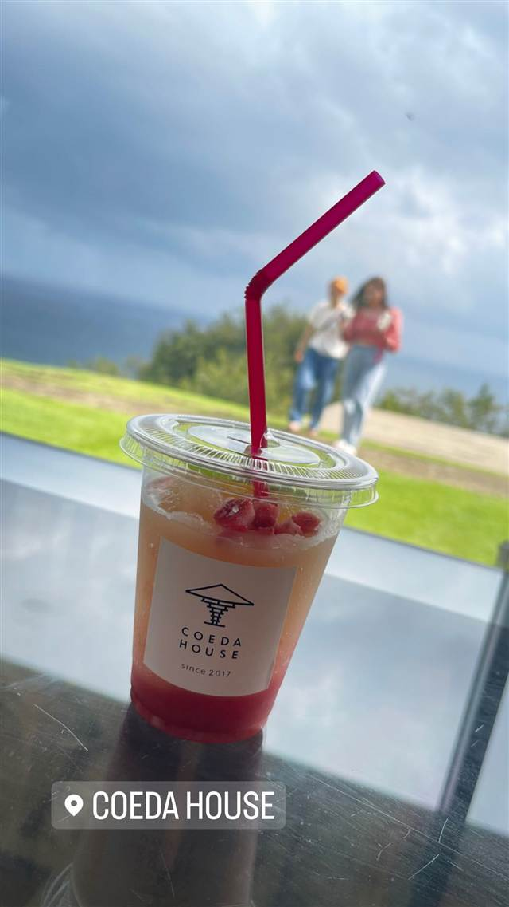

住吉屋 熱海本店
Kiriのクリームチーズ使用、口でとろけるチーズケーキ
熱海のケーキ屋・住吉屋（すみ…
住吉屋は熱海の老舗菓子店で、看板商品「とろけるチーズケーキ」で知られる。フランス産Kiriのクリームチーズと自家製カスタードを高温で短時間蒸し焼きにすることで、口に入れた瞬間にとろける独特の食感を生み出している。
REVIEWS
世間の評判
3.32食べログ
とろけるチーズケーキの人気
- 看板商品のとろけるチーズケーキが美味しいという評価が非常に多い
- シュークリームや食パンなど商品の種類が豊富だと評価する人が多い
- 創業75年余りの老舗としての安定した味を評価する声もある
食べログ 口コミ81件
| 看板 | とろけるチーズケーキ |
|---|---|
| こだわり | フランス産Kiriのクリームチーズと自家製カスタードを絶妙なバランスでブレンドし、高温のオーブンで短時間蒸し焼きにすることで口の中でとろける食感を実現。牛乳は地元・丹那の牧場から届く搾りたてを、卵は富士山麓の養鶏場のものを使用。 |
| 掲載・評価 | テレビ「ヒルナンデス」で紹介された実績あり |
| どこから | 日帰りで行ける遠さ |
| 営業時間 | 月・火 09:00-17:00 水 休み 木〜日 09:00-17:00 |
| 予算 | 昼 ～¥999 夜 ～¥999 |
| 定休日 | 水曜 |
| 予約 | 予約不可 |
| 場所 | 来宮駅 静岡県熱海市渚町13-2 |
| メモ | 熱海市役所近くにある老舗菓子店。通販でも人気で「伊湘箱」などお取り寄せ商品としても販売されている。 |
食べたもの：とろけるチーズケーキ
NEARBY
近い店・同じ系統の店
-

ピザ 伊豆多賀駅（熱海駅からバス・タクシー推奨） CODA ROSSA（コーダロッサ） 熱海ACAOリゾート内、全室オーシャンビューで味わうナポリピッツァ 昼 ¥2,000～¥2,999 夜 ¥6,000～¥7,999 -

カフェ 伊豆多賀駅（熱海駅からバス・タクシー推奨） COEDA HOUSE（コエダハウス） 隈研吾設計の建物越しに相模湾を一望できるバラ園内の絶景カフェ 昼 ¥1,000～¥1,999 夜 ¥1,000～¥1,999 -
 ケーキ・パフェ 目白駅
AIGRE DOUCE（エーグルドゥース）
クープ・デュ・モンド準優勝シェフの苺のショートケーキ
昼 ¥1,000～¥1,999 夜 ¥1,000～¥1,999
ケーキ・パフェ 目白駅
AIGRE DOUCE（エーグルドゥース）
クープ・デュ・モンド準優勝シェフの苺のショートケーキ
昼 ¥1,000～¥1,999 夜 ¥1,000～¥1,999
-
 ケーキ・パフェ 自由が丘
パティスリー パリ セヴェイユ
ラデュレ仕込みの技が光るカヌレ、食べログ百名店の一軒
昼 ¥1,000～¥1,999 夜 ¥1,000～¥1,999
ケーキ・パフェ 自由が丘
パティスリー パリ セヴェイユ
ラデュレ仕込みの技が光るカヌレ、食べログ百名店の一軒
昼 ¥1,000～¥1,999 夜 ¥1,000～¥1,999
-
 ケーキ・パフェ 代々木公園駅
ナタ・デ・クリスチアノ（Nata de Cristiano's）
姉妹店の人気デザートが独立したポルトガル風エッグタルト
昼 ～¥999 夜 ～¥999
ケーキ・パフェ 代々木公園駅
ナタ・デ・クリスチアノ（Nata de Cristiano's）
姉妹店の人気デザートが独立したポルトガル風エッグタルト
昼 ～¥999 夜 ～¥999
-
 ケーキ・パフェ 白金高輪駅
メゾン・ダーニ（MAISON D'AHNI）
本場ビアリッツの老舗で出会った郷土菓子ガトーバスク
昼 ¥1,000～¥1,999
ケーキ・パフェ 白金高輪駅
メゾン・ダーニ（MAISON D'AHNI）
本場ビアリッツの老舗で出会った郷土菓子ガトーバスク
昼 ¥1,000～¥1,999